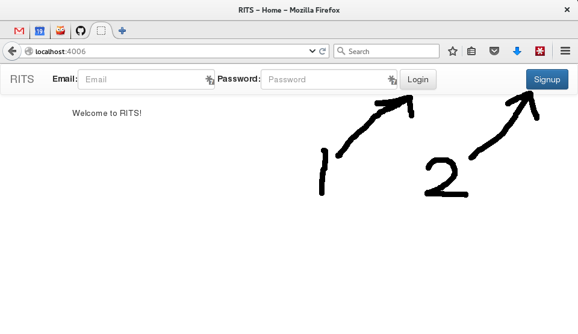
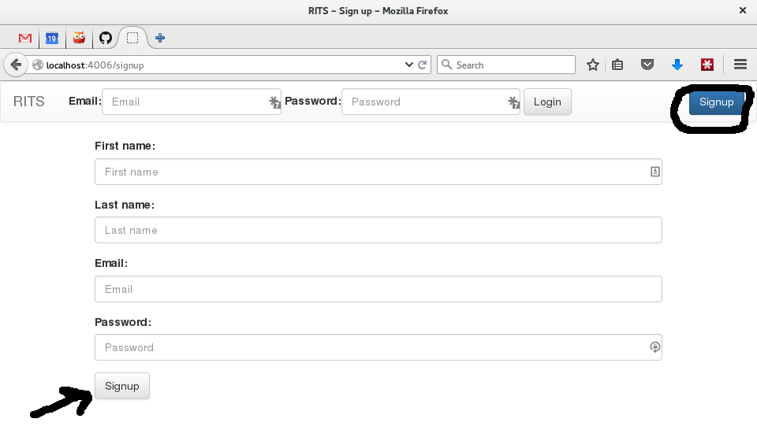
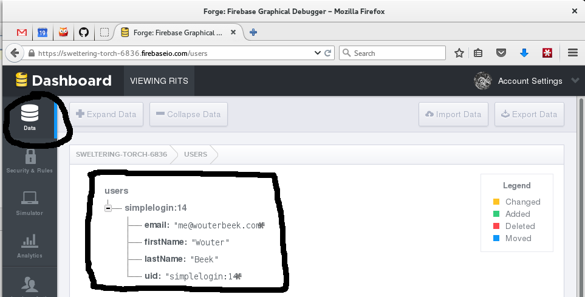
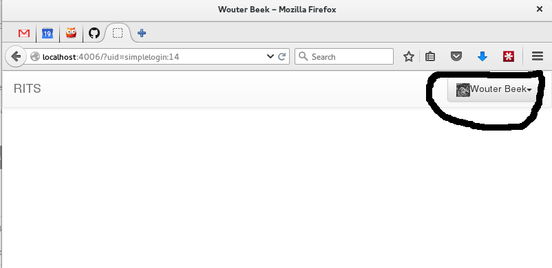
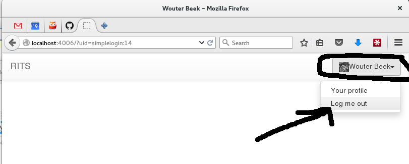
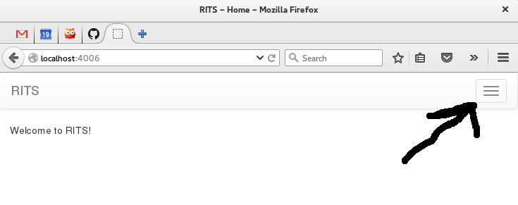

RITS
Progress Report
June 20th, 2015
Slides at http://wouterbeek.github.io/rits/rits.html
DISCLAIMER: Styling and layout are still 100% preliminary
I placed a navigation bar on top of the RITS Web site
The user can log in (1) or subscribe (2).
The signup form
Signup automatically logs the user in if input is correct.
If some input is incorrect a red notification is shown.
Signing up adds a user to Firebase

Users can be managed through Firebase (password reset, delete).
Signing up adds data to the Firebase DB
Additional info can be added whenever that is needed, e.g., user role (student, teacher, etc.)
If the user logs in he receives an avatar
Avatar automatically found using Gravatar.
The user can manage his/her own account through the gravatar
Currently the user can own log out through this menu.
The entire Web UI scales to mobile.
Notice the hamburger menu.
Opening the hamburger menu.

Mobile and desktop have the exact same features.
Prolog library for JSON Web Tokens (JWT)
TODO
- User can reset password
- User can delete profile
- User can request new password through email
- Login through Google (+avatar)
- Login through Facebook (+avatar)
- Login through Twitter (+avatar)